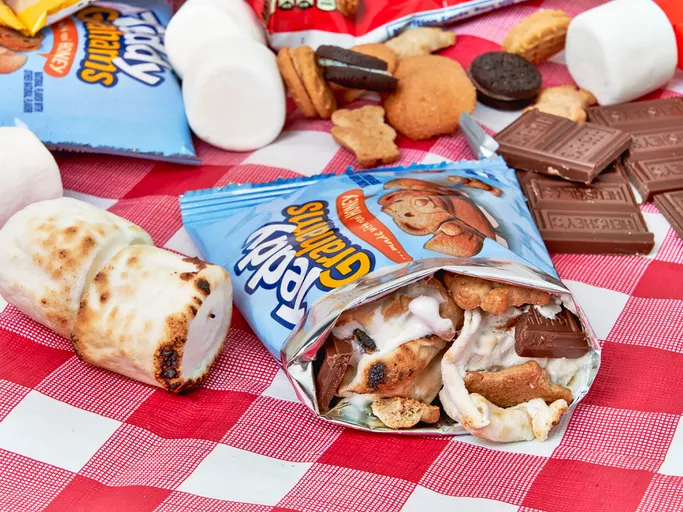
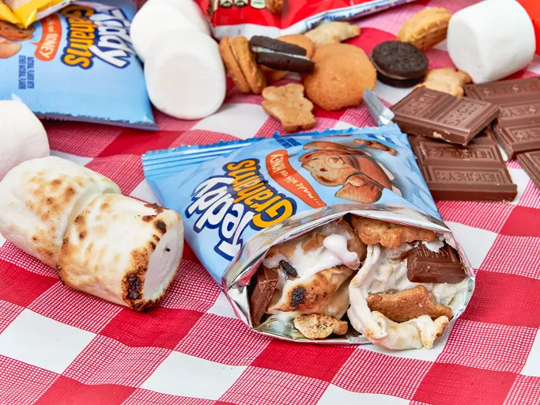

Recipes
These are a few of my all-time favorite looking dishes, from allrecipes.com, all made by people other than myself.
For Breakfast: Shrimp Egg Foo Young
For Dinner: Mushy Peas
For Dessert: S'mores in a Bag
These are a few of my all-time favorite looking dishes, from allrecipes.com, all made by people other than myself.
For Breakfast: Shrimp Egg Foo Young
For Dinner: Mushy Peas
For Dessert: S'mores in a Bag
